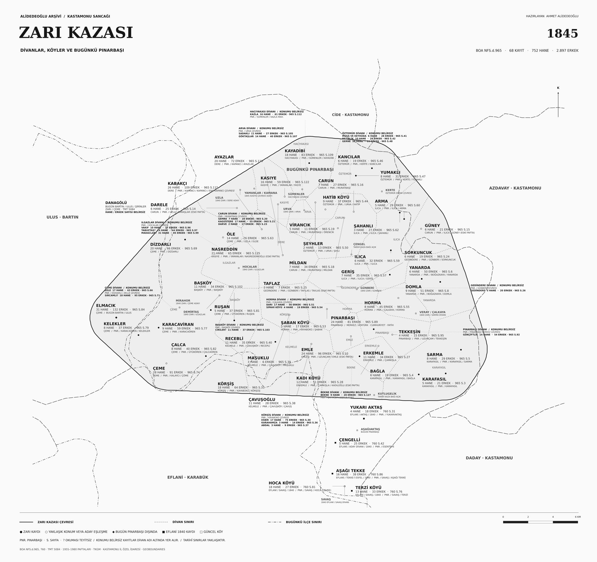

Zarı Kazası, 1845
Divanlar, köyler ve bugünkü Pınarbaşı
BOA NFS.d.965 · Kastamonu sancağı · 68 kayıt · 752 hane · 2.897 erkek


Divanlar, köyler ve bugünkü Pınarbaşı
BOA NFS.d.965 · Kastamonu sancağı · 68 kayıt · 752 hane · 2.897 erkek
